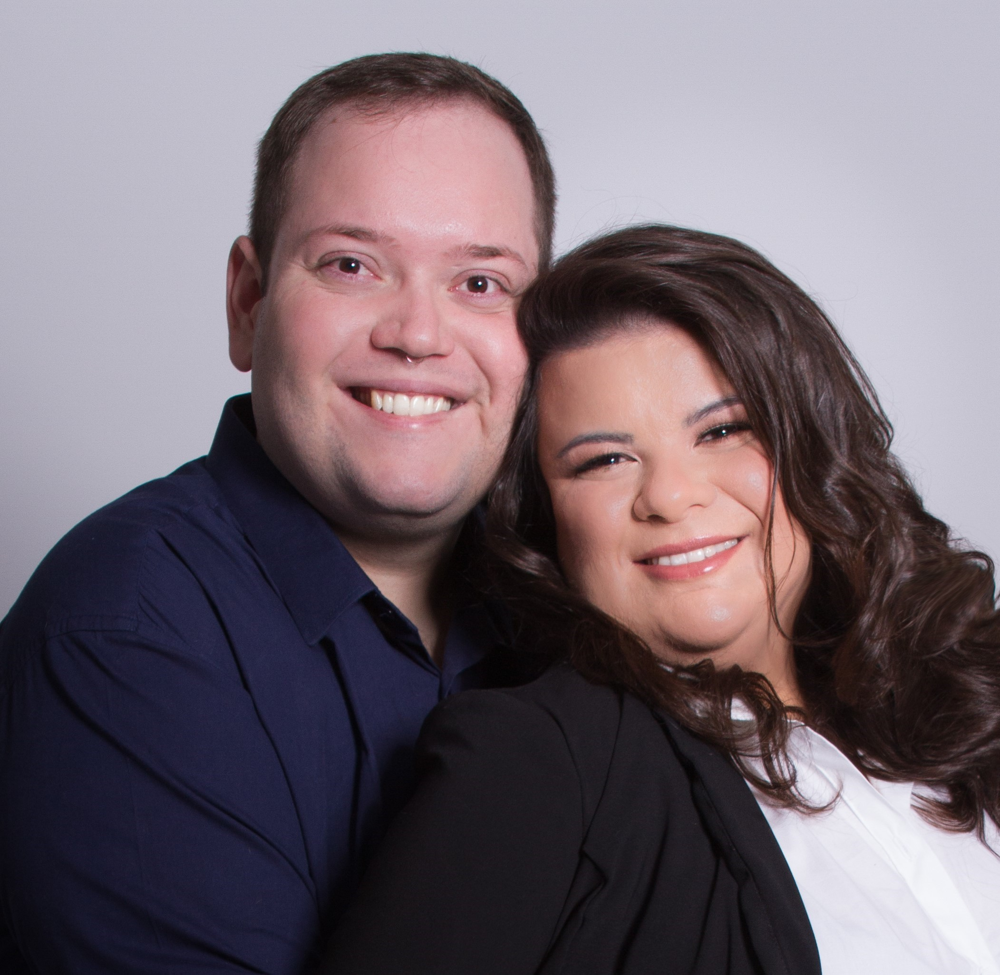
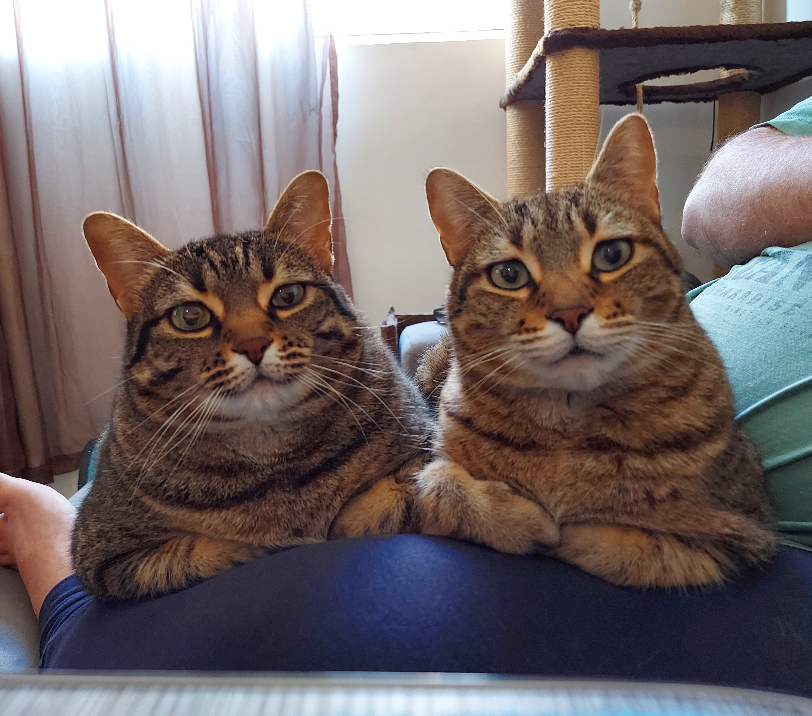
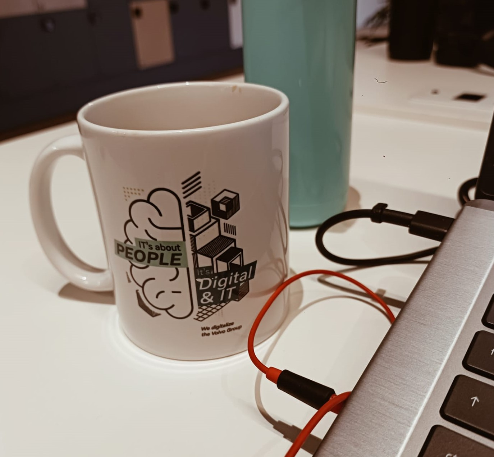

Sobre Mim
Tenho 30 anos, sou natural de Ponta Grossa no Paraná, mas há 7 anos resido na cidade de Curitiba, também no Paraná. Sou casada há 7 anos com o Gabriel.

Temos dois gatinhos a Lilith e o Dante.

Atualmente estou em transição de carreira da área de Serviço Social para a área de Ciência de Dados. Sou estagiária de Engenharia de Dados na Volvo Trucks.

Nas horas vagas meu marido e eu gostamos de jogar vídeo game juntos e brincar com nossos gatinhos. Um dos meus hobbies é pintar as minhas próprias unhas e fazer coleção de esmaltes, tenho hoje mais de 100 esmaltes colecionados.